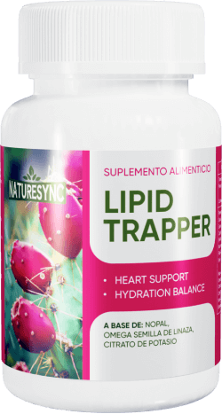

Lipid Trapper
cápsulas para un corazón saludable


La presión arterial alta ya no es una amenaza para ti
444 $
222 $
Disminuye el contenido de grasa de los alimentos
Contribuye a estabilizar la presión arterial
Ayuda a fortalecer los vasos sanguíneos
Ayuda a disminuir la cantidad de colesterol en el organismo
Previene la formación de trombos
Fuente de ácidos vegetales omega 3